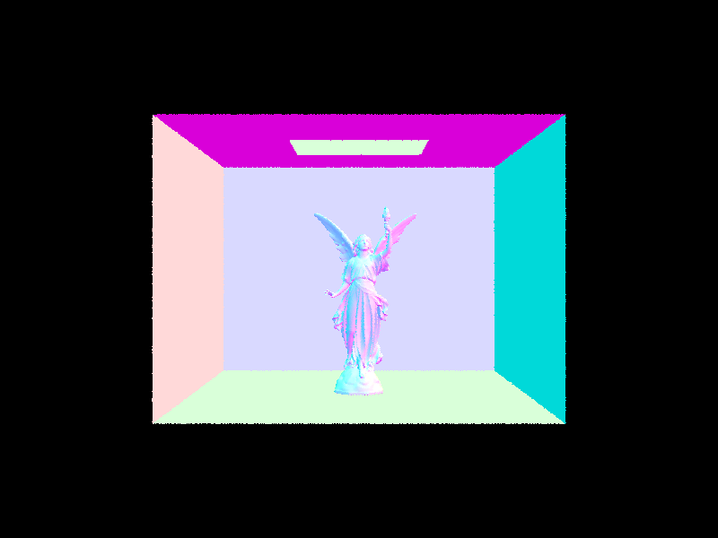
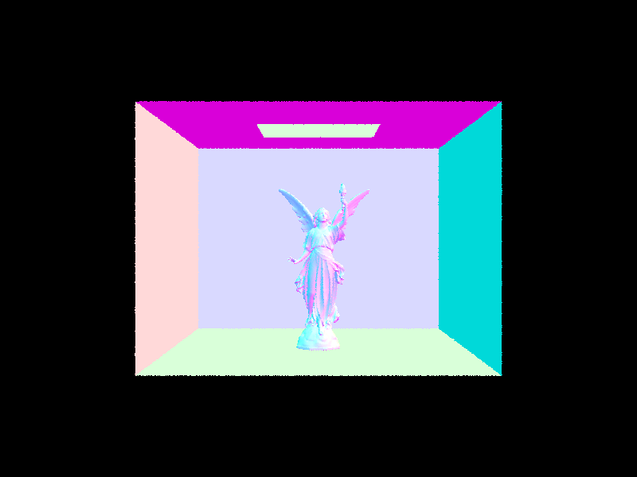

I explored the complexities of ray tracing, starting with generating rays from the camera and their intersection with scene primitives like triangles. I focused on the triangle intersection algorithm to accurately capture viewer's perspective and moved on to enhance rendering efficiency through the construction of Bounding Volume Hierarchies (BVH), significantly reducing rendering times. My work also compared direct lighting estimation techniques, comparing importance sampling and hemisphere sampling. I further delved into indirect lighting, employing a recursive approach for simulating light bounces to enhance realism. Lastly, I implemented adaptive sampling for its potential to optimize rendering by adjusting sample numbers based on scene complexity. Through comparative analyses and practical examples, I demonstrated how these techniques contribute to producing high-quality, efficient renderings, showcasing the advancements possible in rendering technology.
The ray generation process begins by creating rays originating from the camera, projecting through each pixel on the image plane, and extending into the scene. This step involves calculating the direction of each ray based on the camera's position, orientation, focal length, and the pixel's position on the image plane, ensuring that the rays accurately represent the viewer's perspective. Once the rays are generated, they intersect with the scene's primitives, such as triangles or spheres, in the primitive intersection phase. Each primitive's specific intersection algorithm is used to determine whether and where a ray intersects the object. This involves solving mathematical equations that represent the geometric relationship between the ray and the primitive. If an intersection occurs, details like the point of intersection, the distance from the ray's origin, and the surface normal at the intersection point are recorded. These details are crucial for subsequent steps in the pipeline, such as shading and lighting, to compute the final color and intensity of the light reaching the camera from each point in the scene, thereby creating the final rendered image.
The core idea behind the triangle intersection algorithm is to find the point where the ray intersects the plane of the triangle, if at all, and then determine if this point lies within the boundaries of the triangle. To do this, I first calculate two edge vectors of the triangle, E1 and E2, by subtracting the coordinates of the first vertex from the other two vertices. These edge vectors, along with the ray direction and a vector from the ray origin to the first vertex of the triangle, are used to compute the determinants necessary to solve for t (the distance from the ray origin to the intersection point), b1, and b2 (the barycentric coordinates of the intersection point with respect to the triangle vertices). The barycentric coordinates help in determining whether the intersection point lies within the triangle by checking if b1 and b2 are greater than or equal to 0 and if their sum is less than or equal to 1. If these conditions are met, the intersection is valid, and the intersection data is updated accordingly. The distance t is checked against the minimum and maximum bounds of the ray to ensure the intersection is within the ray's extent. Additionally, the intersection point's normal is interpolated from the vertex normals based on the barycentric coordinates, providing smooth shading across the triangle's surface. This interpolated normal, along with the intersection point, material properties from the triangle's assigned bsdf, and the reference to the intersected primitive, are stored in the intersection structure passed to the function.
In my implementation of the BVH construction, I aimed for an approach that balances efficiency in both the construction of the hierarchy and the subsequent ray-primitive intersection tests during rendering. The algorithm begins by encapsulating all given primitives within a single bounding box, progressively subdividing them into smaller groups based on their spatial distribution until each group meets a specified maximum leaf size criterion.
The subdivision process relies on a heuristic to determine the most effective way to split the primitives at each node. Specifically, I calculate the centroid of each primitive's bounding box to represent its position in space. Then, the overall bounding box enclosing all these centroids is examined to identify the axis along which the primitives are most spread out — this is determined by comparing the extents of the bounding box in the x, y, and z directions. The axis with the largest extent is chosen as the splitting axis because it suggests that dividing along this axis will most effectively separate the primitives into two more evenly distributed groups. Once the splitting axis is selected, the median point along this axis is computed as the splitting position, aiming to partition the primitives into two approximately equal groups. This method, however, does not strictly partition by counting the primitives but rather by their spatial distribution, leading to potentially uneven groups but attempting to keep the tree balanced in terms of volume covered by each node. The primitives are then sorted based on their centroid's position relative to the median point on the chosen axis, and the process recurses on the two newly formed groups of primitives. This recursion continues until the number of primitives in a group is less than or equal to the maximum leaf size, at which point a leaf node is created.
This construction strategy is designed to build a BVH that efficiently supports fast ray-tracing by reducing the number of ray-primitive intersection tests needed. By spatially organizing the primitives within a hierarchical structure and ensuring that each internal node reasonably divides the space it encompasses, the algorithm aims to minimize the depth of the tree and balance the distribution of primitives among the leaf nodes. The result is a BVH that accelerates the rendering process by quickly culling large sections of the scene that are irrelevant to a given ray, allowing for more rapid determination of ray-primitive intersections.
Without BVH acceleration | With BVH acceleration |
[PathTracer] Rendering... 100%! (283.7557s) [PathTracer] BVH traced 459274 rays. [PathTracer] Average speed 0.0016 million rays per second. [PathTracer] Averaged 8223.810910 intersection tests per ray. [PathTracer] Saving to file: maxplanck.png... Done! [PathTracer] Job completed. Program ended with exit code: 0 | [PathTracer] Rendering... 100%! (0.2326s) [PathTracer] BVH traced 380500 rays. [PathTracer] Average speed 1.6357 million rays per second. [PathTracer] Averaged 2.998941 intersection tests per ray. [PathTracer] Saving to file: maxplanck.png... Done! [PathTracer] Job completed. Program ended with exit code: 0 |
[PathTracer] Rendering... 100%! (774.8840s) [PathTracer] BVH traced 456937 rays. [PathTracer] Average speed 0.0006 million rays per second. [PathTracer] Averaged 22471.317372 intersection tests per ray. [PathTracer] Saving to file: CBlucy.png... Done! [PathTracer] Job completed. Program ended with exit code: 0 | [PathTracer] Rendering... 100%! (0.1460s) [PathTracer] BVH traced 321165 rays. [PathTracer] Average speed 2.1995 million rays per second. [PathTracer] Averaged 1.132169 intersection tests per ray. [PathTracer] Saving to file: CBlucy.png... Done! [PathTracer] Job completed. Program ended with exit code: 0 |
In my analysis of rendering times for scenes with moderately complex geometries, I observed significant improvements when employing BVH acceleration compared to not using it. For both scenes, rendering was completed in a fraction of a second with BVH, whereas without BVH, it took several minutes. This drastic reduction in time is attributed to the efficiency of BVH in reducing the number of intersection tests required per ray. Not only did BVH acceleration reduce the rendering time, but it also increased the average speed of ray processing and substantially decreased the average number of intersection tests needed per ray. The reduction in intersection tests per ray with BVH directly translates to less computational work, leading to faster rendering times without compromising the quality of the final image.
The `estimate_direct_lighting_hemisphere` function embodies a straightforward approach to estimate direct lighting by uniformly sampling the hemisphere around the intersection point. This method constructs a coordinate system at the point of intersection where the normal vector aligns with the Z direction, facilitating sampling directions that are uniformly distributed over the hemisphere. For each sample direction, it casts a ray towards the light, checks for intersections with the scene to account for occlusions, and calculates the contribution of light based on the BSDF evaluation and the cosine of the angle between the incoming light direction and the surface normal. This method does not consider the directionality of light sources, which might result in less accurate shadows and highlights compared to methods that prioritize light direction, especially around area lights. The lighting contribution from each sampled direction is accumulated and averaged, providing an estimate of the direct illumination at the intersection point.
Conversely, the `estimate_direct_lighting_importance` function adopts a more sophisticated approach known as importance sampling, where the sampling is biased towards the directions of incoming light from scene light sources rather than uniformly over the hemisphere. This method aims to increase the efficiency and accuracy of the lighting estimate by focusing computational resources on directions that contribute more significantly to the visible lighting. For each light source, it generates samples directed towards the light, considering the light's emission profile and distance, and computes the shadow rays to determine visibility. The direct lighting contribution is weighted by the inverse of the probability density function (PDF) associated with the sampled direction, ensuring that the lighting estimate accurately reflects the physical distribution of light. This approach, especially beneficial for scenes with distinct light sources, results in more realistic shading and shadows by effectively capturing the directional characteristics of each light source.
Comparing the two renderings from the two different methods, both methods serve to estimate the direct lighting component in a scene but differ in their approach and efficiency. The hemisphere sampling method provides a uniform, albeit less focused estimate of lighting, which can be computationally less intensive but might require more samples for accurate results in complex lighting scenarios. In contrast, importance sampling, by concentrating on light-emitting directions, can achieve more accurate and visually pleasing results with fewer samples, effectively reducing noise and improving convergence speed in rendered images. The light sampling bunny has significantly less noise compared to the hemisphere bunny.
1 light ray
Using only one light ray per area light, even with a single sample per pixel, resulted in significant noise in the soft shadows. This is because each pixel's color is determined by a single path that may or may not hit the light source, leading to high variance in shadowed areas.
4 light ray
Increasing to four light rays per area light starts to reduce the variance in the soft shadows because more paths are averaged for each pixel. I still observe considerable noise, but there is a noticeable improvement in the softness and consistency of the shadows compared to using just one light ray.
16 light ray
At sixteen light rays per area light, the noise in the soft shadows is significantly reduced. This increase allows for a better approximation of the actual light distribution, resulting in smoother gradients and more consistent soft shadows. However, noise is still present, especially in the shadows of the bunny and grainy walls.
64 light ray
With sixty-four light rays per area light, the soft shadows in the scene appear much smoother and more realistic, with minimal noise. This higher number of rays allows for a close approximation of the true lighting environment, capturing subtle variations in shadow intensity and softness that lower ray counts miss.
As the number of light rays increases, the noise in the rendered image's soft shadows decreases. This improvement is because more samples provide a better statistical representation of the light's interaction with the scene, averaging out fluctuations that appear as noise. Increasing the number of light rays improves shadow quality but at the cost of increased computational time. Rendering with many light rays per pixel can significantly increase the time required to render an image, especially at higher resolutions or in complex scenes. In practical terms, for a scene with at least one area light, increasing the number of light rays per area light when using light sampling will result in progressively smoother and more accurate shadows.
For the second bounce of light, I see lights that are reflected from the bottom floor of the scene. I also see some lights bouncing off from the red and blue walls creating a slightly tinted shade on the back wall, floor, and the bunny. The bottom surface of the bunny is bright because the light is bounced off from the floor, and similarly the top surface of the bunny is shaded because there is an intersection(bottom of the bunny) between the floor and the top surface.
For the third bounce of light, a lot of lights are bounced off from the bunny and hit the walls, as the bunny seems to appear darker than the walls. The lights have further diffused throughout the scene, carrying nuanced color information from one surface to another. Moreover, the third bounce continues to amplify the effects of color bleeding and soft shadows, contributing to a more cohesive and immersive environment. The details become softer and more integrated into the scene, as the light that has bounced multiple times loses intensity and saturation, mirroring the natural behavior of light.
The main advantage of simulating multiple bounces of light lies in the enhanced realism and depth it brings to rendered images. While rasterization can produce visually appealing results efficiently, it often lacks the physical accuracy and nuanced light interactions provided by ray tracing techniques. Ray tracing, with its ability to simulate the second, third, and subsequent bounces of light, captures the subtle complexities of light behavior—resulting in images with a depth and realism that rasterization alone cannot achieve without significant compromise on performance or realism.
1 sample per pixel
2 samples per pixel
4 samples per pixel
8 samples per pixel
16 samples per pixel
64 samples per pixel
1024 samples per pixel
Adaptive sampling is a sophisticated technique designed to enhance rendering efficiency by dynamically adjusting the number of samples per pixel based on the complexity of the scene at that pixel. This method optimizes computational resources, concentrating on areas that demand higher precision to accurately capture details, such as sharp edges or regions with significant variations in lighting and color. The goal is to achieve a balanced image quality across the scene with a minimal number of samples, effectively reducing render times and noise levels in the final image.
In my implementation of adaptive sampling, the goal was to optimize rendering efficiency by intelligently determining the number of samples per pixel, based on the complexity observed at each location. This method allows for a significant reduction in computational resources for less complex areas of the image, without compromising on the quality of rendering in more detailed regions.
The process starts by initializing accumulators for the sum and square sum of illumination values for each pixel. These metrics are critical for calculating the mean illumination and its variance after processing a certain number of samples, which are central to the adaptive sampling decision-making process. The sampling loop processes samples in predefined batches, with each sample contributing to the overall estimate of illumination at the pixel. Following each batch, the algorithm assesses the variance of the accumulated illumination values. If the variance falls below a pre-established tolerance, indicating a stable estimate, the algorithm concludes that additional samples will not significantly refine the illumination estimate for that pixel, and thus, terminates sampling early for efficiency. Upon completion of the sampling for a pixel, the average illumination is computed and used to update the pixel's color in the output image.
CBbunny.png
CBbunny_rate.png
CBspheres_lambertian.png
CBspheres_lambertian_rate.png